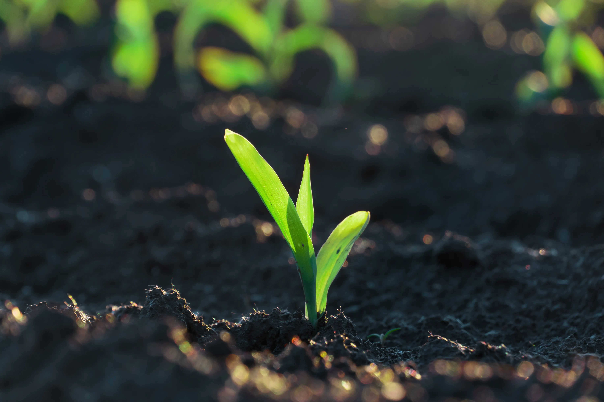

La Terre Murmure
On écoute
Deep Root documente. Ni publicité, ni procès. Des enquêtes honnêtes sur ce que la technologie apporte à la terre. Et ce qu’elle ne peut pas encore voir.
Deep Root

Deep Root documente. Ni publicité, ni procès. Des enquêtes honnêtes sur ce que la technologie apporte à la terre. Et ce qu’elle ne peut pas encore voir.
FarmSync est la première application d’intelligence intégrée directement dans la ferme et les animaux. Elle combine une analyse visuelle du terrain par senseurs avec des capteurs sous-cutanées. L’ensemble en continu, FarmSync traduit les comportements en données directes, avec directives. Cette technologie vous donne une longueur d’avance.
Cependant, derrière l'interface épurée et les promesses de rentabilité, que se passe-t-il lorsque le code se confronte à la rugosité du quotidien ? Deep Root a suivi quatre exploitations fraichement équipées de ce nouveau système. Des nuits d’agnelage aux surveillances de batiments, nous avonsé de trouver les points de rupture de la machine face aux réalités du vivant.

Un éleveur épuisé s'en va dormir confiant des naissances à FarmSync. L'agneau se présente mal, l'orage coupe le réseau et l'alerte ne part jamais. Ce cas interroge sur la limite de l'automatisation.

La détection d’immobilité fonctionne parfaitement avec les bovins. Dans le bâtiment pour poussins, la densité du vivant obstrue la réflexion de FarmSync. Le capteur voit tout; sauf ce qu’il ne peut pas.

L'implant analyse le sang en temps réel. Plus de rendez-vous vétérinaire, plus d'attente. Mais quand la biologie fluctue et l'algorithme sonne en boucle, l'éleveur finit par couper le son.

Les caméras transforment l'étable en données. L'algorithme optimise l'espace. Puis vient le gel et l'éleveur passe sa journée à réparer des machines au lieu de soigner ses bêtes.
À propos de Deep Root
Nous sommes nés au croisement de deux mondes qui se parlent trop peu : la terre et le code.
Deep Root n'est ni un cabinet de conseil en innovation, ni un mouvement de retour en arrière. Nous sommes un collectif hybride. Parmi nous, il y a des éleveurs qui passent leurs journées au milieu des bêtes, des chercheurs en agronomie qui étudient le monde rural, et des développeurs capables de désosser un capteur pour comprendre son fonctionnement.

Nous pensons que la technologie agricole est un outil puissant, mais qu'elle est aujourd'hui déployée sans filtre de réalité. Nous enquêtons pour documenter la vérité du terrain. Nous testons les algorithmes face à la boue, à l'ammoniac, au gel et à l'imprévisibilité du vivant. Notre but n'est pas de rejeter des outils, mais de mettre en lumière leurs angles morts afin que l'éleveur reste maître de son outil, et non l'inverse. Nous creusons là où la donnée s'arrête, là où les racines commencent.
Exploitations partenaires
Sponsor industriel
TB de données analysées
Le collectif Deep Root garantit l’anonymat total de ses sources et l'indépendance de ses analyses. Pas de compromis, pas de pression industrielle. Ensemble, documentons le réel pour que la technologie reste au service de la terre, et non l'inverse.